Minimum Manual
Works for narrow launches
Core line, forms, rules, loss costs, manual access, circulars, and statistical references.
- Best for limited line and state scope
- High manual effort
- Harder to maintain over time

Verisk BriefThe Verisk conversation should center on a shared opportunity: helping carriers turn ISO content into governed rates, rules, forms, state decisions, filings, and underwriting workflows.
ISO content is valuable, but carriers still carry the burden of interpretation, configuration, adoption decisions, state variation, testing, filings, and audit evidence.
A credible ISO-based PAS or product operations layer needs more than rating tables. It needs source content, interpretive references, structured rating content, forms, circulars, statistical references, and filing context.
The best executive recommendation is a modern MVP bundle that supports repeatable configuration, explainability, maintenance, and compliance controls.
Core line, forms, rules, loss costs, manual access, circulars, and statistical references.
Core ISO content plus ERC, circular feeds, statistical code content, and filing references.
Rating-as-a-Service can prove premium quickly, but it needs transparency around source, logic, and forms.
The three MVPs should be presented as a staged product strategy, not as separate ideas. The initial build creates the configured baseline. Maintenance keeps it current. Filings govern what can be used.
Stand up an ISO-based product configuration for an initial line and state footprint.
Evaluate and adopt ISO changes across rates, rules, forms, states, and effective dates.
Connect filing artifacts, SERFF references, approvals, and effective dates to executable configuration.
Federato's strongest value sits in the operating layer that makes ISO and Verisk content useful inside carrier workflows.
| Federato Capability | Carrier Value | Verisk Relevance |
|---|---|---|
| Source traceability | Teams can explain where a rate, rule, form, or deviation came from. | Extends the value of Verisk content into operational workflows. |
| Configuration workflow | Rates, rules, and forms move through review, testing, approval, and activation. | Makes Verisk content easier to adopt and maintain. |
| Circular adoption | Carriers can see what changed and decide how to respond by state and product. | Creates a stronger use case for ongoing ISO and ERC updates. |
| Filing integration | Approved filings govern whether configuration can deploy. | Connects filing references to the product behavior they authorize. |
| Portfolio impact | Product decisions can be evaluated against in-force, renewal, quote, and submission impact. | Adds workflow and business context around source content changes. |
The conversation should test how Federato can use, complement, and operationalize Verisk content without overreaching on licensing or direct redistribution assumptions.
Federato can report company usage by ISO state, product, program, and source content for ISO/Verisk audit review.
These questions are designed to clarify content access, partnership options, workflow opportunities, and near-term feasibility.
| Topic | Executive Question | Why It Matters |
|---|---|---|
| Content Path | What are the preferred paths for a technology provider to work with licensed ISO content when the carrier is the content license holder? | Clarifies whether carrier-mediated ERC and source access can support near-term implementations. |
| Usage Audit | What usage data should Federato provide so ISO/Verisk can audit which products, states, programs, and content sources each carrier or MGA is using? | Gives ISO/Verisk a practical customer usage audit trail. |
| ERC | Which ERC formats and delivery models are most practical for carriers implementing or maintaining ISO-based products? | Guides architecture around machine-readable and human-readable content. |
| Workflow | Where do carriers struggle most after receiving ISO content: interpretation, configuration, circular adoption, filing alignment, testing, or audit evidence? | Tests Federato's strongest workflow wedge. |
| Forms Logic | How does Verisk see forms attachment logic evolving across manuals, ERC, and other structured content? | Forms are central to both PAS execution and filing governance. |
| Partnership | Over the mid- to long-term, what partner models exist for ISVs or workflow platforms that help carriers operationalize ISO content? | Preserves optionality without making a formal partner path a near-term dependency. |
| Boundaries | What usage, display, derivation, audit, and redistribution boundaries should Federato understand early? | Prevents product assumptions from conflicting with licensing and compliance constraints. |
The call should leave Verisk with a clear view of Federato as a workflow and intelligence layer for ISO-based product operations.
The credible posture is a staged PAS build, with coexistence as a migration bridge and deeper PAS capabilities sequenced into the roadmap.
Carriers need help translating ISO content into rates, rules, forms, filings, approvals, and evidence.
Federato can help Verisk content move from source material into governed carrier workflows.
These are the Verisk-facing source references already captured in the strategy documents.
| Source | URL |
|---|---|
| ISO Forms, Rules, and Loss Costs | https://www.verisk.com/products/forms-rules-and-loss-costs/ |
| ISO Electronic Rating Content | https://www.verisk.com/products/erc/ |
| ISO Electronic Rating Content Brochure | https://www.verisk.com/siteassets/media/downloads/iso/iso-electronic-rating-content-suite.pdf |
| ISO Core Line Services Overview | https://www.verisk.com/siteassets/media/downloads/iso/your-business-stronger-and-better-with-iso.pdf |
| ISO Policy Forms | https://www.verisk.com/siteassets/media/downloads/iso/isos-policy-forms.pdf |
| State Filing Handbook | https://www.verisk.com/products/state-filing-handbook/ |
| Rating-as-a-Service Flyer | https://www.verisk.com/siteassets/media/downloads/underwriting/discover-how-cloud-based-rating-can-deliver-speed-and-value.pdf |